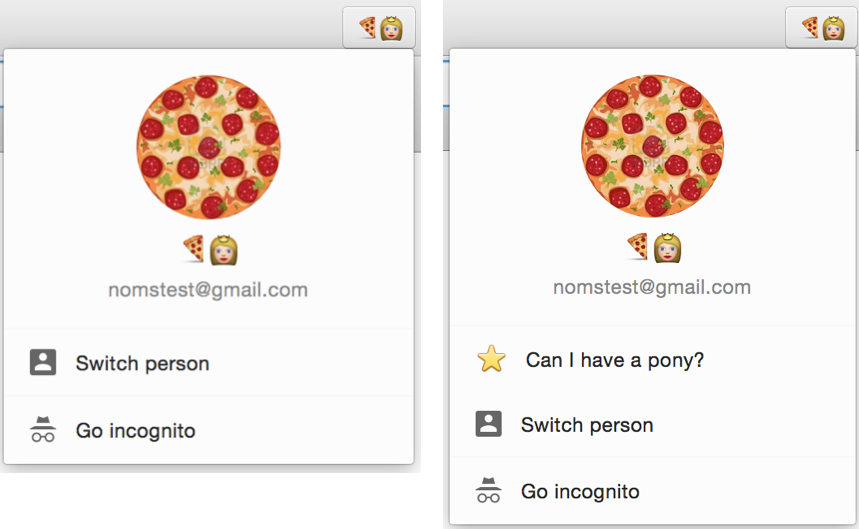

I gave a talk about how to get started contributing to Chromium, but it wasn’t recorded, and my slides by themselves look like cold-medicine induced hallucinations (which, to be fair, they were). So instead, here is a giant blog post that will take you through every step from “checking out the code” to “landing the code in the Chromium repo”. It will also come in super handy for mild to moderate cases of insomnia.
If you just want a TL;DR or a refresher of the commands you might need, check out the slides. They’re basically bullet points without the running commentary.
Warning: this is a long post. The bug we’re fixing is silly, but will get us writing actual Chromium code. If you want a real good-first-bug to fix after this, here is a nice list. Usually unassigned bugs (with no owner) are free for the taking, but it can also happen that a bug will be assigned to a human who is not actually working on it. Check the activity on it – if there haven’t been any activities in a while, leave a message on the bug or ping the owner and tell them you’d like to work on it!
Get your computer ready
Chrome is giant. It needs a beefy machine (we recommend a 64-bit OS, with at least 8GB of RAM. A separate SSD to hold/build your code will make your life infinitely more pleasant), and a couple dozen goat sacrifices. Even then, building Chromium from scratch is slow. Snails run the half mile faster (fact). This is something you might as well get used to.
We have a pretty solid set of instructions on how to get everything set up. I promise you this page has been used and reviewed a billion times, it’s up to date, and every step in it is important. Don’t skip steps because you think you don’t need them. You do.
However, I’ll tell you about the custom things that I use that aren’t on that page, which I’m pretty proud of.
- I always build
Releasebuilds, because they’re faster. This means I don’t get as many debug symbols as I would like. That’s fine for me, because I’m a chicken and pretty scared oflldb, and I debug withprintfslike this is the 80s anyway I’ve added. Chromium switched tocomponent=shared_library(so that incremental builds are super fast) anddcheck_always_on=1(so that even though I have aReleasebuild, debug asserts still get hit) to myGYP_DEFINES. Here are all the ways in which you can set up yourGYP_DEFINES. I use thechromium.gyp_envway on Windows (because I don’t understandPATHvariables) and theEnvironment Variableway on Mac/Linux, because I sort of understandexports. Realtalk, I really don’t know any Windows, and I’m ok with thatgn; check this out for how to enable the component build withgn. The bit about me not knowing any Windows is still true, though.- I have a fancy set of aliases like
make_andgo_, so that I don’t have to remember about which flags I want to run Chrome with. They come indoskeyvariants on Windows - Don’t use cygwin on Windows. It doesn’t play nice with the
depot_tools - I use Atom, and have used Sublime as an editor. Last time I checked, XCode beach balled, huffing and puffing, when trying to load the code. Visual Studio works pretty well if you can stand Windows and its insane command prompt. You can use ctags if you want; I don’t. I use a dumb editor, and find code through
git grepand the Chromium codesearch, because I’m metal like that. You can use anything you want. Literally nobody cares.
Edit (Aug 9, 2016): Chromium just switched to gn, which means some of the comments below don’t apply. Check these mac build instructions for how to make your build fast again, using gn.
Edit (Feb 17, 2016): I wrote a detailed answer that contains a whole bunch of extra tricks to make builds faster.
Get your body ready
Chromium has a code style. Do not panic if your first review will have 20 comments that are code style nits. It’s absolutely normal, and nobody thinks less of you. On the contrary, we try to be extra picky with new people, so that they learn everything as quickly as possible.
Chromium is hard. I’ve been working on it for two years, and it’s still hard. There’s a loooot of code, and you’ll spend a fair bit of time looking for the right bit of code you care about. Don’t be afraid to ask questions if you’re stuck. It took me forever not to be scared of asking questions, but it turns out all the people that told me that everyone is nice and helpful were right: everyone IS nice and helpful, because at some point they were you, the code was as scary then as it is now, and the compiler has never stopped barfing errors since the day it was born.
- IRC: there’s a #chromium room for dev-related questions. It’s a bit of a zombieland outside of PST hours
- mailing list: [email protected]. I strongly recommend to search the archives before you ask a new question. A lot of common things have been asked, and people tend to get a bit grumpy if you ask “how do I get infinite quota translate API keys” for literally the thousandth time
- if you’re still stuck and panicked, email me. I might not know the answer, and I might be super busy, but I promise to be nice and help in whichever way I can. Gifs of animals doing silly things are encouraged
OMG let’s write some code!
We’re going to add a button to Chrome. It’s going to be the best thing ever (second to a freshly opened can of Pringles). For realsies. It will be in this bubble here, and it will open [redacted] (2019 update: I let that URL expire and now it apparently points to nsfw things so uhhhh don’t click it.) in a new tab. This is the before and after:

(side note: if you don’t see that button in your dev build of Chromium, launch it with --enable-new-avatar-menu. The UI is enabled by default on all of the released Chromes through a server side flag, but that bit of magic doesn’t run on dev builds, so you need to turn it on yourself)
I chose this dialog because the easiest way to find your way through code is for there to be a searchable string in there like “Switch Person”. Also I wrote this bubble, so it’s Pretty Clutch™.
0. Make a branch
First things first: always create a new branch for every bug/feature/bit of code you’re working on. Working directly on the master branch is bad news bears: 1) it’s very unlikely you’re working on one thing at a time, 2) pulling new code from the remote master to your local repo becomes an adventure. .TL; DR: don’t work on master evar. So,
(´ ▽｀).。ｏ♡ src on master ❥ git checkout -b add-pony-button origin/master
Branch add-pony-button set up to track remote branch master from origin by rebasing.
Switched to a new branch 'add-pony-button'
(´ ▽｀).。ｏ♡ src on add-pony-button ❥
1. Find the code
Hooman, meet codesearch. It’s your best friend in Chromium. It knows where all the codes are and who they’re called by, and where interfaces get implemented. I spend so much time with it, I’ll probably send it a Valentine’s Day card this year. Anyway, search for “Switch Person” in there, and get these results
First, generated_resources.grd is where most of the
strings in Chrome live. A giant file makes
internationalization sooper easy – you hand out the file to translators, they
give you back the same file in a different language, and at startup, Chrome
decides which file to load based on its locale. Bingo bango, localized UI.
Some of the results have ACCESSIBLE_NAME in them, which means that they’re accessibility strings (hint: they’re read out loud by VoiceOver apps). IDS_PROFILES_SWITCH_USERS_BUTTON looks promising though, so let’s see where it’s used.
Aside from the generated_resources.grd results from before, we have two new files!
chrome/browser/ui/views/profiles/profile_chooser_view.cc– This is in auisubfolder, which means it’s a UI related file (good sign), so probably a dialog or a bubble. On top of that, it’s a.ccfile in aviewsfolder, which means it’s Windows/Linux codechrome/browser/ui/cocoa/profiles/profile_chooser_controller.mm– The.mmis a dead give-away this is a Mac UI file. On OSX we write our UI in Objective-C and drink a lot of wine to forget
I’m doing this demo on the Mac, so let’s look at profile_chooser_controller.mm. I’ve
written both of these files, so I promise you they’re SUPER similar.
2. Adding a button
Ok, so now I’m looking at profile_chooser_controller.mm and here’s how my brain would start nomming this code: that string ID is used in a button that
lives in a method called -createOptionsViewWithRect:. This method is called by
-buildProfileChooserView:, which in turn is called by -initMenuContentsWithView:. You
can go down this rabbit hole for days, but the basic idea is that this is clearly the place where we draw buttons in this bubble.
If we look at -createOptionsViewWithRect: in particular, it
does the following:
- creates a drawing rectangle that’s of a fixed width and fixed height. This is the
size of each of those buttons. If you’re not familiar with Cocoa (who can blame you),
the way this works is that we draw everything in
relative coordinates. We’re basically going to keep this rectangle fixed, and just
change the
ycoordinate at which we’re drawing. Also:y=0is the bottom of the screen, andy=a billionis the top of the screen, and we always draw bottom to top. Say it with me, “because Cocoa”. -hoverButtonWithRect:is a utility function that draws a fancy button with a text, an image, and an action selector (that’s Cocoa-speak for “click handler”)- If we’re allowed to display the lock button, it creates and draws
lockButton. Spoilers:displayLockisfalseunless you do some Chrome gymnastics I honestly don’t recommend, because they’re way less fun than they sound - If we’re allowed to display the incognito button (we are), create and draw it
- Finally, create and draw a button whose string is “Exit Guest” if we’re a Guest session, or “Switch person” otherwise
- Did you see how we drew everything bottom to top? Yeah. That’s a thing.
Hey! We should do the same thing! Let’s add our ponyButton right below the
switchUsersButton (which, again, means it’s being drawn above it ARE YOU HAVING FUN YET???). The highlighted bits are the new code.
The code we just wrote says that when you click on the ponyButton, we call a method called -goPoniesGo:. We should probably write it, so that we can actually test our code. It will only log something to the console for now, because logging code is the best code.
If you build and run this, your bubble should look like the “after” image described before, and clicking the button should spew things on the console.
3. Making the button go
This bit is a leap of faith. We want to open a URL in a new tab, but we don’t
really know how. If you search for things like open in new tab, you can hope
to hit some comments, but tabs are kind of like the prom queen of the browser so you’re going to get a crap load of useless results. Unfortunately for us, I know that we’re looking for a method called chrome::ShowSingletonTab (in chrome/browser/ui/singleton_tabs.cc). Had I not known this, I think I would have found it, for example, by checking how the
“Settings” item in the hot dog menu (or hamburger menu, call it whatever food you wish) opens the “chrome://settings” tab. It will take some digging.
If you don’t know how to use ShowSingletonTab(), I would codesearch again for different
uses of the function. This time, just by looking at the method signature, we
can figure out we should write:
Because the stars aligned and Mercury wasn’t in retrograde, we had all
of the .h header files already included for this to work. Compile it, run it, and get a pony!
Send your code for review
I don’t know about you, but I’m preeeeeeetty proud of this feature, so I feel we’re ready to send it for review!
Run git commit -am "added pony button" to commit this file, and git cl upload to upload it to codereview.
In your git cl upload message, write a meaningful description, a crbug ID, and a blurb about how to
test this. This is what I would write:
And if that goes well, this is what your CL (stands for change-list. Comes from the dark days of Perforce) should look like on the site! (that CL doesn’t exist anymore, but here’s a random CL as an example)
If you want to test that your CL didn’t break anything, run git cl try. This will look at what your code touches and run a whole bunch of tests on a whole bunch of platforms.
In Chromium, code lands only after it’s been LGTM-ed, which means that someone has reviewed it and gave you the thumbs up. If you don’t know to whom to send it for review, pick someone
from your file’s OWNERS. In this case, look at the OWNERS file in chrome/browser/ui/cocoa. Owners are people who are responsible for the code,
so they tend to know it best. If they’re too busy for a review or aren’t
entirely familiar with your particular part of the code, they can direct you to
a better reviewer.
(Side note: please don’t actually send this pony code out for review. People will be very confused, and not necessarily amused.)
Ship it, squirrel! 
When your CL is reviewed and ready to go, all you have to do is check the “Commit” checkbox, and the commit-queue bots will take care of it. This means that they will run a whole bunch of unit tests again, and if they all pass (or “come up green”), merge your code into the current master branch.
Oh noes, TROUBLE
Sometimes, something goes wrong (or even better, horribly wrong). Your bots could come up red, and then you’ll
get an email from the commit-bot telling you your CL couldn’t land, because you done bungled some tests. This is totally fine – you didn’t break anything yet, because your code wasn’t merged.
Either your tests are actually broken, or some code got committed before you
and you need to rebase, or maybe you’ve just encountered a flaky test and don’t need to do anything. You can go back to your CL, fix your tests, and re-check the
“Commit” box.
Sometimes you’ll even get to break the tree. I recently tried to land a change where all my bots were green and as soon as the change landed, it broke 165 tests on each bot. Suuuup.
It happens. You can revert your CL if you realize this in time, or that day’s sheriff might do it for you (especially if you’re an external committer, aren’t on IRC, etc). In this case, be nice to the sheriff and apologize a bit. Maybe send them a gif. Remember: if you’re stuck, ask for help!
Good first bugs
We have a list of bugs deemed as “good starter bugs”. Sometimes they’re more complicated that we thought, so don’t panic if that’s the case. It’s not you, it’s Chrome :). Protip: in the statuses, “Assigned” with a name in the owner means someone is actually looking at that issue, so it’s probably not a great one to pick.
Your turn!
That’s it! That’s how you commit code to Chromium! Good luck, and if you do end up landing a CL, send me an email or a tweet. I’d love to see it!